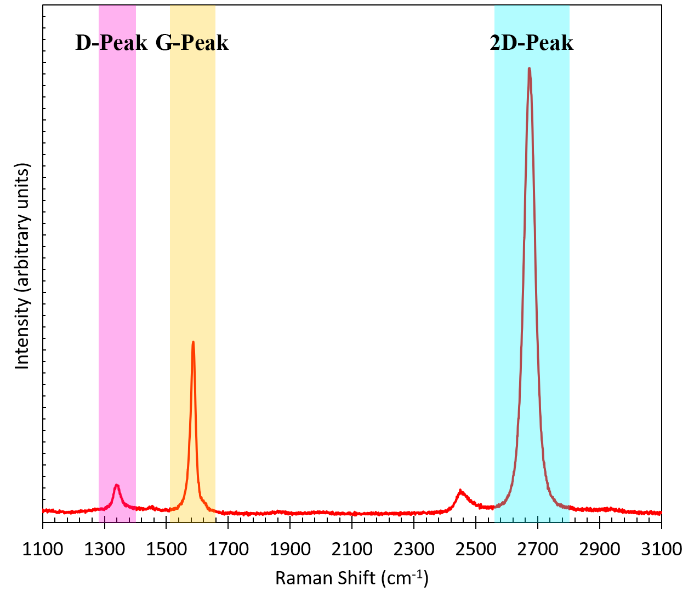

Automated Python Script for Spectroscopic Mapping
Table of Contents
Task
This project is based on an existing professional task that I explored. An industry is working on state-of-the-art graphene-based sensor and
need to ensure that the sensors produced are of the highest quality.
I was tasked with analysing data measurements performed by other researchers and assess the quality of the graphene-based sensors. This involves engaging with researchers and other analysts to gather insights into the existing processes.
Tools Utilised
Background
Research scientists perform Raman spectroscopy on the graphene and pass the data along to analysts. Raman spectroscopy is a technique for analysing carbon-based materials, such as graphene. It creates 3 peaks, called the "D-peak", "G-peak" and "2D-peak", which are key indicators of graphene quality,
by measuring the ratio between the "D-peak" and the "G-peak", known as the "D/G Ratio". The higher the D/G ratio, the lower the quality.
The following graph illustrates the 3 peaks found in each .txt file:

Challenges
1. Analysing data from thousands of .txt files, each containing spectra, presented challenges in both data volume and the need to distinguish three peaks within each spectrum accurately
Solution: Developed a Python script to automate the extraction and processing of data, leveraging Pandas and NumPy for efficient handling of large datasets. Implemented a custom peak detection algorithm, incorporating signal processing techniques and statistical methods to accurately identify and separate the three peaks within each spectrum.
2. Ensuring accurate spatial mapping for the plotted data was crucial for meaningful analysis
Solution: Extended the Python script to include spatial mapping visualization using Matplotlib. Integrated geographical information into the analysis, based on the values found in the file names, providing a comprehensive spatial map that enhanced the interpretability of the data.
3. Collaborating with researchers and analysts was essential for process insights, requiring deep expertise to navigate graphene and Raman Spectroscopy complexities
Solution: Actively engaged with collaborators, facilitating communication and sharing Python code snippets. Conducted focused background research, collaborating with experts to ensure accurate data interpretation aligned with industry scientific requirements.
Python Code
This Python script systematically extracts x and y coordinates from the file names, reads data,
applies signal smoothing, calculating the D/G Ratio from each file.
The dimensions of the plot and the ratio representation for each mapping point are determined from the extracted x and y coordinates. The layout of the file names
for the outputted data files are shown below, with the x and y coordinates shown in bold:
| File Number | File Name |
|---|---|
| 1 | "RamanMap1_1500_x100obj_10pwr_3sx1_0__X_8679.02__Y_-70129.4__Time_0.txt" |
| 2 | "RamanMap1_1500_x100obj_10pwr_3sx1_1__X_8679.52__Y_-70129.4__Time_3.txt" |
| 3 | "RamanMap1_1500_x100obj_10pwr_3sx1_2__X_8680.02__Y_-70129.4__Time_7.txt" |
| ... | ... |
| 32 | "RamanMap1_1500_x100obj_10pwr_3sx1_31__X_8679.02__Y_-70128.9__Time_109.txt" |
| 33 | "RamanMap1_1500_x100obj_10pwr_3sx1_32__X_8679.52__Y_-70128.9__Time_113.txt" |
| 34 | "RamanMap1_1500_x100obj_10pwr_3sx1_33__X_8680.02__Y_-70128.9__Time_116.txt" |
Outputs and Findings
Data Visualisation Output:
Upon running the Python script, the generated contour plot provides a comprehensive visualization of the graphene-based sensor data. The plot reveals the presence of the desired pattern; however, closer inspection exposes patches with higher D/G ratios. This observation signifies areas of potential concern, indicating variations in graphene quality across the sensor surface.

Findings:
In collaboration with fellow researchers and analysts, we delved into the identified discrepancies to deduce potential causes. The elevated D/G ratios in certain areas suggest underlying issues that warrant attention. Possible contributors include surface contaminants introduced during the fabrication process, indicating a need for rigorous cleanliness measures. Additionally, the findings imply that further optimization of the device may be necessary to achieve uniform performance across the sensor. Lastly, poor graphene quality is considered as a potential factor influencing the observed variations, prompting a thorough examination of the fabrication techniques and materials.